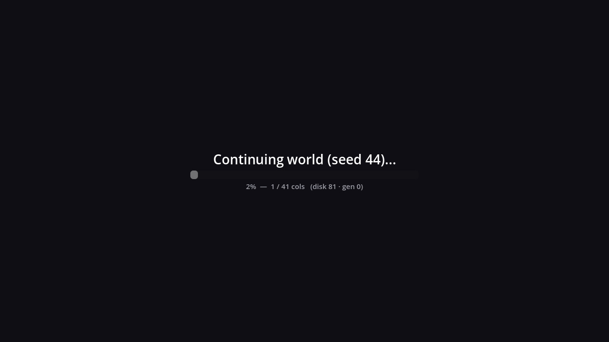
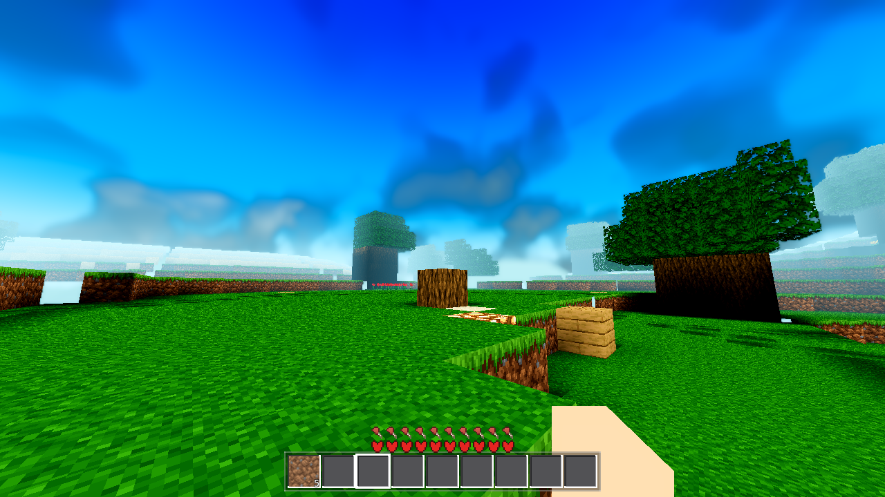

Ticket: Continue (menu → slot) must show the same loading screen as new-world gen — cover + progress % — and keep the cover until the spawn diamond is fully disk-loaded + meshed (no half-loaded void). Reuse the AC-0178 UI; verify on a 1k+ column save. Outcome: DONE. The window now opens on continue, shows an honest per-column progress line while the saved columns stream off disk, closes exactly at the sim taxi diamond, and only then does the player exist (input blocked by construction, no void pop). Evidence below is from the frames and the captured state, not from description.
ui/loading_screen.gd: cover + title + bar +
N% — m / 41 cols (disk X · gen Y)); the window machinery in
world.gd (start_loading/stop_loading/_loading_tick, the
sim-diamond target — taxi ≤ sim, 41 cols at sim 4 — the AC-0313-corrected gate,
not the ticket's pre-correction "R~8"); the AC-0414 bake hold + live bake line
(path-agnostic: it fires from _loading_tick whenever
loading_active and the bake is WORK — so a continue with a cold bake
cache gets the honest bake line for free); the disk/gen provenance counters
(_try_disk_load bumps disk_reads — on a continue that
number IS the saved-columns load); and main._await_sim_band, which waits
on the SAME condition as the window's close — the simband wall is the
load→activation wall, so the player can never exist over an unbuilt diamond.main._continue_slot (a fenced file —
another session's uncommitted work) has no start_loading caller.
The window was fresh-spawn-only (start_game). On continue, the menu
hid on click and the player then watched the raw half-built world for the whole
sim-band wait. Only the TRIGGER was missing; every line the screen would show
already worked.| File | Change |
|---|---|
godot/world/world.gd (+48) |
_ac0186_continue_window() — the world arms its own window on the
continue path, called from _process right before
_loading_tick() (a trigger that opens the window is updated on the same
frame). Gates: loading_bypass (AWECRAFT_LOADBYPASS=0 still kills
every window) + first window of the boot (the radius-change window stays
note_render_distance's) + mode play + player not handed over +
the active slot has a save file (a fresh spawn's slot is empty until
Save.save_now runs AFTER the load — and start_game's own
start_loading fires synchronously before the first tick, so that path
is untouched) + the Menu node exists under Main (the real menu-first flow;
harness arms boot without a menu and must keep loading_active=false —
the load arm's standing contract). AWECRAFT_LOADCONTINUE=1 forces the
trigger for probe runs. Title: Continuing world (seed N)... |
godot/ui/loading_screen.gd (+6) |
progress_text() getter — the probe samples the live stats line
without reaching into _stats. |
godot/ARCHITECTURE.md (+20) |
Same-task sync (invariant 2): the load-screen clause now records the world-owned trigger on the continue path and its gates; the AC-0414 paragraph gains the AC-0186 note. |
Fenced files untouched: main.gd, game.gd,
debug.gd, drop.gd — the trigger reaches only public
members (Game, Save, Settings,
get_node_or_null("Menu")). A temporary continuewin probe
arm went into harness.gd for the measurements below and is
removed again (pristine rule; final G0 re-verified after removal). No
harness_data.yaml row (temp arms get none — AC-0414 precedent).
Mid-continue, on the shipped Forward+ path (lavapipe proxy, 1280×720):

captures/contwin_window.png (sha256
00512c73…d1d2ec, 1280×720): full cover — no half-loaded world visible —
title "Continuing world (seed 44)...", bar starting, and the honest line
"2% — 1 / 41 cols (disk 81 · gen 0)": what is happening (the 41-col spawn
diamond), how far (1 of 41), and where the data is coming from (disk = the saved
columns streaming in; gen 0 = nothing being regenerated). The captured trajectory
(render run, 0.1 s sampling):
t+ 313 ms window opens "0% — 0 / 41 cols (disk 0 · gen 0)"
t+ 968 ms disk streaming "0% — 0 / 41 cols (disk 52 · gen 0)"
t+ 1389 ms disk complete "0% — 0 / 41 cols (disk 81 · gen 0)"
t+ 5759 ms meshing "31% — 13 / 41 cols (disk 81 · gen 0)"
t+ 6090 ms meshing "60% — 25 / 41 cols (disk 81 · gen 0)"
t+ 6515 ms window CLOSES at 41/41; the player spawns at t+6640 ms
(the await returns, Game.start — the player node exists ONLY now)
Headless run (the 1k+ census) shows the identical shape with the regen mix on a
larger save: 0% (disk 0 · gen 0) → 0% (disk 81 · gen 21) → 31% → 60% → close,
window open at t+391 ms, close at t+6097 ms, player at t+6204 ms. If the satellite
bake cache were cold on a real machine, the same window would show the AC-0414 live
bake line ("Baking the planet…", shard k/98) instead of a frozen bar — that hold is
the same _loading_tick code, measured by AC-0414 (169 s bake, 48.4 s
release); not re-exercised here (see "deliberately not done").
Post-continue, from the player's saved pose:

captures/contwin_post.png (sha256 b5c84b05…69a7d1): the fully
meshed world at the saved pose — no void, no pop. The saved marker blocks are visible
(the trunk + plank stack ahead are non-natural ids placed before the save; the small
distant plank tufts are the ring edits), and the hotbar shows the saved inventory
(dirt ×5, the item given before the save) — edits, pose and inventory all round-tripped
through the save → continue that the window covered.
The sandbox's user:// is fresh per process, so the arm creates the
world, saves it and continues it in ONE godot process (the save arm's pattern). It
built a taxi-22 ring (1013 cols, all inside the r22 render circle), marked 6
distinctive blocks + one edit per ring column (planks — never generated), saved
(AWECRAFT_SAVEALL=1 — the test-only full-circle save, the flysave arm's
A/B env; the natural-flow save shape — diamond + edited columns — is the standing
save arm's territory), evicted, and then ran
main._continue_slot(0) with the forced window:
ok: true saved_cols: 1013 <-- the 1k+ disk census (region-table entries, 8 region files) window_opened: true win_open_ms: 391 win_close_ms: 6097 continue_ms: 6204 disk_reads: 81 gen_count: 21 diamond_ok: true (all 41 cols data+meshed) blocks_match: 6/6 pos_ok: true sel_ok: true saved_ok: true build_ok: true
The census counts REGION ENTRIES (the on-disk columns), via the same helpers the
chunkio arm uses. The continue's disk_reads: 81 (41 diamond + halo) with
gen_count: 21 is the honest disk/gen split the progress line shows.
| Gate | Run | Exit | Census | Result |
|---|---|---|---|---|
| G0 (baseline, pre-change) | --headless --quit | 0 | 0 script / 0 shader | ok |
| G0 (post-change) | --headless --quit | 0 | 0 / 0 | ok |
| SMOKE | BATTERY=player;interact;light;fluids;genhash | 0 | 0 / 0 | battery ok: true |
| PROBE | AWECRAFT_PROBE=1 (standalone terrain census) | 0 | 0 / 0 | PROBE ocean_cells=49 centroid=[-12,-3] max_h=164 |
| genhash 25/25 | in SMOKE + extracted | 0 | — | 25/25 byte-identical vs the AC-0414 smoke set AND the AC-0403 final set (the standing reference) |
| save arm | AWECRAFT_LOGIC=save (runs _continue_slot twice) | 0 | 0 / 0 | ok: true — 6/6 blocks, pos/sel/time/inv/iso round-trip; ran with loading_active=false per the standing contract |
| settings arm | AWECRAFT_LOGIC=settings | 0 | 0 / 0 | ok: true |
| boundary r4 (one-shot self-check) | AWECRAFT_LOGIC=boundary AWECRAFT_RADIUS=4 | 0 | 0 / 0 | ok: true — p50/p95 13/34 ms (AC-0414: 13/35), crossings 20, footprint missing 0, marker_ok |
| continuewin headless (1k+ census + window) | LOGIC=continuewin LOADCONTINUE=1, 48 s | 0 | 0 / 0 | ok: true (table above) |
| continuewin render | xvfb + lavapipe --rendering-driver vulkan, 1280,720, 77 s | 0 | 0 / 0 | ok: true — boot line Vulkan 1.4.318 - Forward+ - Using Device #0: Unknown - llvmpipe (LLVM 20.1.8, 256 bits); both captures exist (no SNAP FAIL) |
| G0 (final, temp arm removed) | --headless --quit | 0 | 0 / 0 | ok — the tree is pristine (arm gone); the git diff footprint is world.gd +48, loading_screen.gd +6, ARCHITECTURE.md +20 |
main.gd) — main.gd is fenced, so
the trigger lives in world.gd and arms the existing
start_loading entry point. Behaviour is the ticket's; only the owner of
the call moved.AWECRAFT_SAVEALL=1 (test-only env, the
flysave A/B usage) for the bulk of the saved circle + the 6 marker edits; a
natural-flow save of a building world persists the same way (the AC-0287 edited
clause) and the standing save arm covers that shape. The census is the
largest reasonable save shape — the conservative test for the disk load.res:// textures (phase LOAD, never
WORK), so the AC-0414 hold cannot engage on these runs — and exiting mid-bake on a
non-canonical seed is exactly the stochastic use-after-free class the coordinator
flagged (clean log, signal-eleven exit). The hold + live line are the same
_loading_tick code AC-0414 measured on the fresh-spawn path._process
frame after _continue_slot starts — the menu hides on click, the cover
follows within one frame (~16 ms at 60 Hz). The player node does not exist until the
diamond is built, so there is no input and no world visible in between.main.gd/game.gd/debug.gd/drop.gd
edits (fenced — another session's uncommitted work).Logs: .scratch/AC-0186-{g0-baseline,g0,g0-final,smoke,probe,savearm,settingsarm,boundary-r4,contwin-headless2,contwin-render}.log.
Plan: tasks/AC-0186/plan.html. Captures:
tasks/AC-0186/captures/.